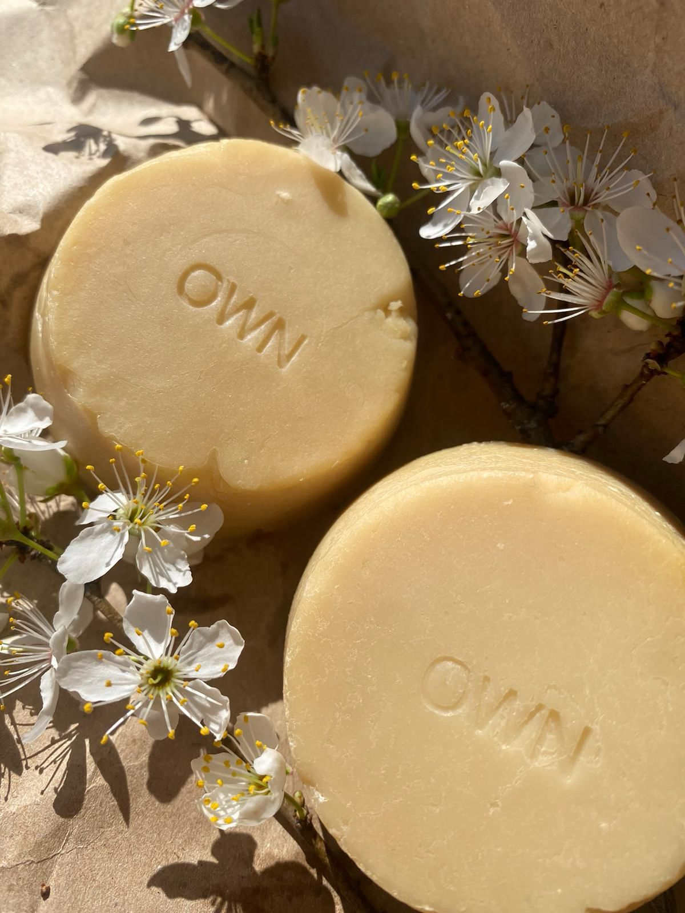

Products

Own sapu za negu tela
Sapun za kupanje i tuširanje koji nežno čisti kožu i čini je mekom i svilenkastom.
Posebno nežna formula čini ovaj sapun pogodnim za sve tipove kože,čak i najsuvlje i najosetljivije.
Sastojci koji ulaze u sastav našeg sapuna za negu tela su ulje avokada, kokosovo ulje,kako butter,shea butter,
etarska ulja pačulija i pomorandže,aloe vera,vitamin E,vitamin AD